Sixteen complete replacements for the zlOS desktop, each a working interactive prototype rather than a picture. Windows focus, move and close; the overview and command palette open; the settings toggles and sliders change real values. Every colour is a :root custom property named after the design.h token it would become.
None of this is implemented in the kernel. design.h, ui.c, wm.c, uikit.c and kernel.zl are untouched on this branch. The reasoning is in deciding.md; the axis picker is decide.html.
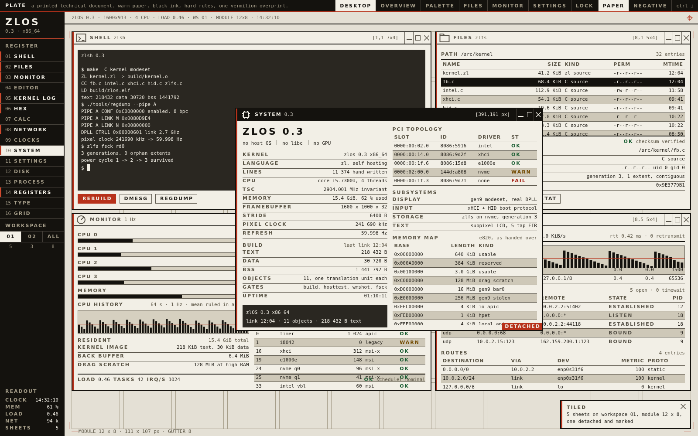
A printed technical document. Warm paper, black ink, hard 2px rules, one vermilion overprint. The left rail is a numbered register; the module grid is ruled onto the desk where you can see it. Focus knocks the header plate out to solid ink. Dark is ortho lith film.
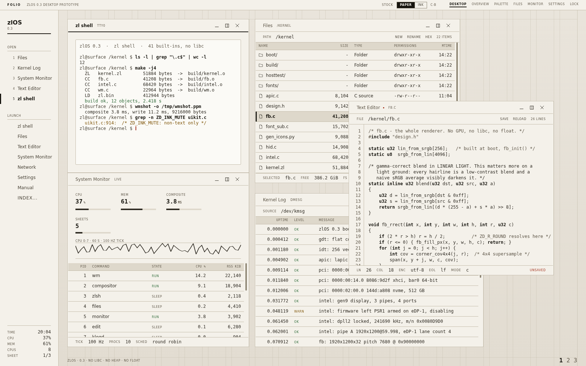
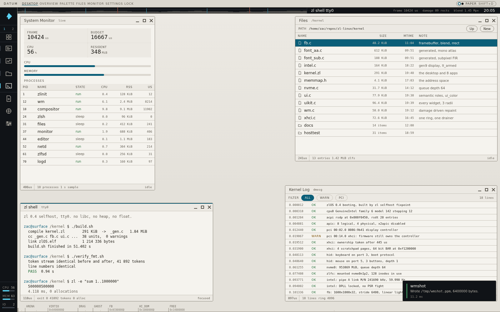
Paper and ink are two different materials on screen at once, by law: paper is the user's, ink is the machine's. A full-height ink rail, a full-width raster strip, a microsecond timing in every window's status band, a memory-map ruler along the bottom edge.
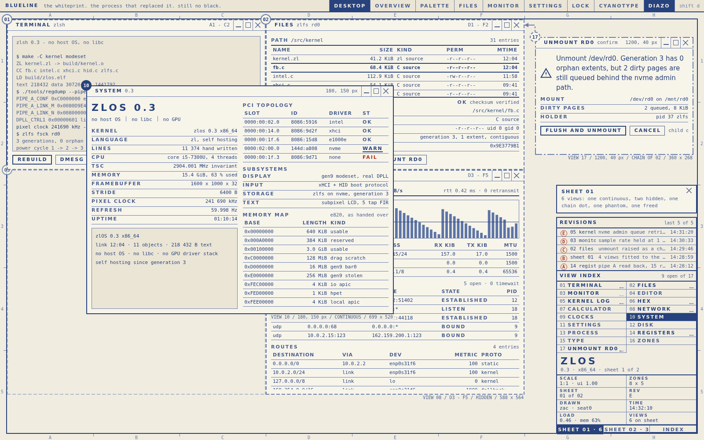
An engineering drawing in diazo whiteprint. Blue line on white, no black anywhere, cyanotype as the other mode. All chrome collapses into a bottom-right title block. Window state is line type: present continuous, unfocused hidden, minimised phantom.
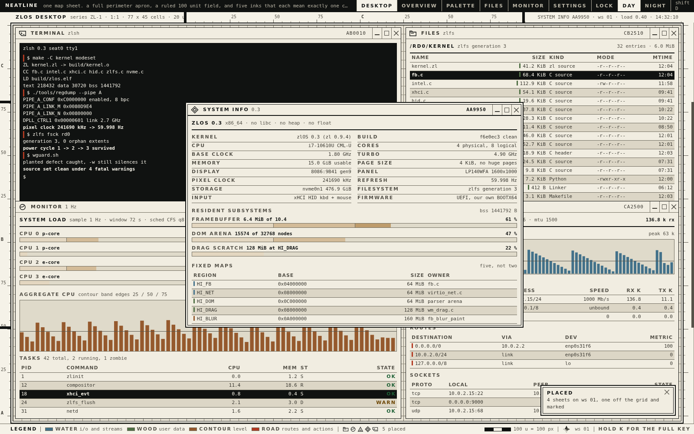
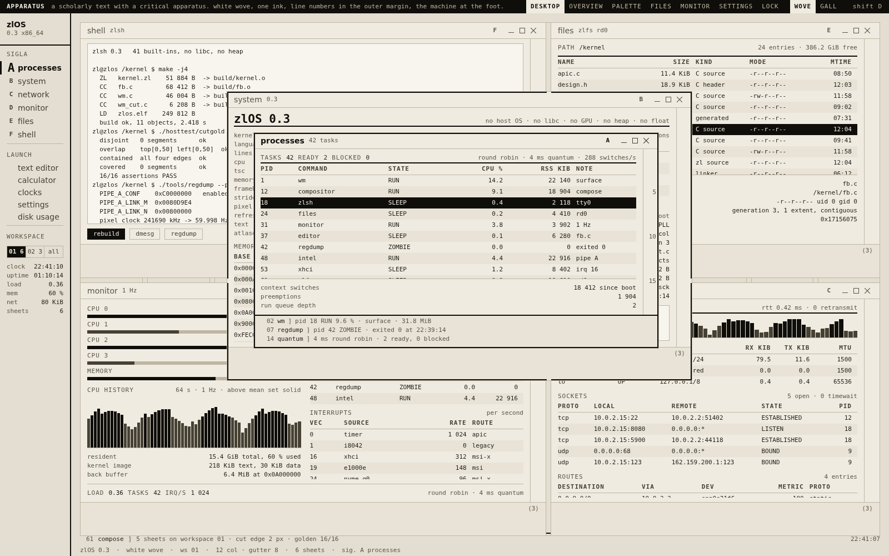
Every window is a scholarly text with a critical apparatus: numbered lines in the outer margin, the machine's commentary at the foot keyed to line numbers. Focus means the apparatus opens. Its cut edge is drawn by the occluder, never the occluded.
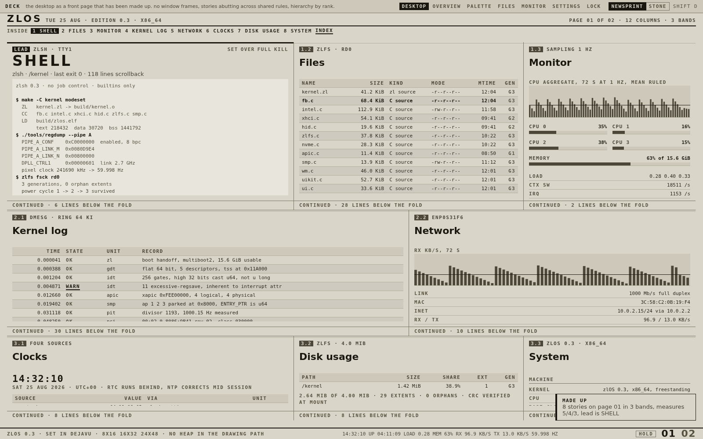
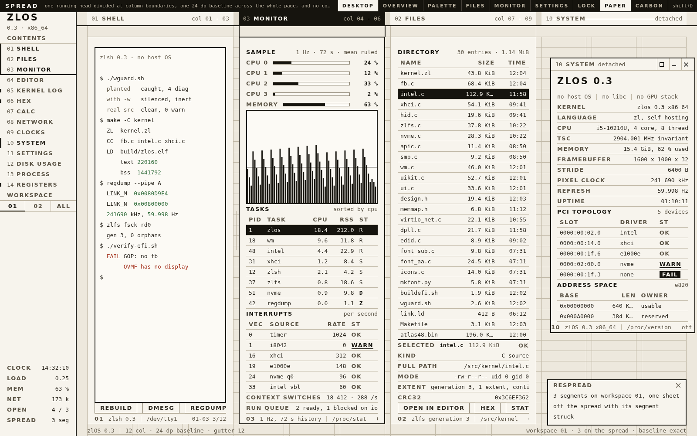
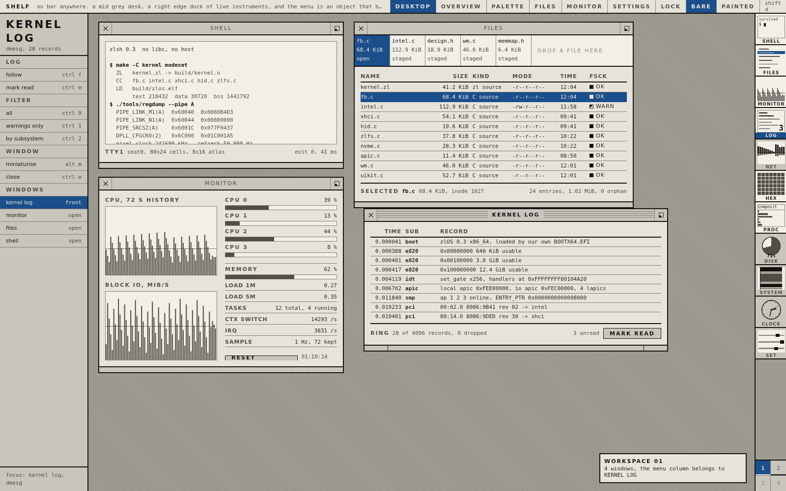
A workstation, from the NeXTSTEP and IRIX line rather than the GNOME one. No bar anywhere: a mid-grey hatched desk, a left menu column that belongs to the focused application, and a right-edge dock where every item is a live instrument rather than an icon.
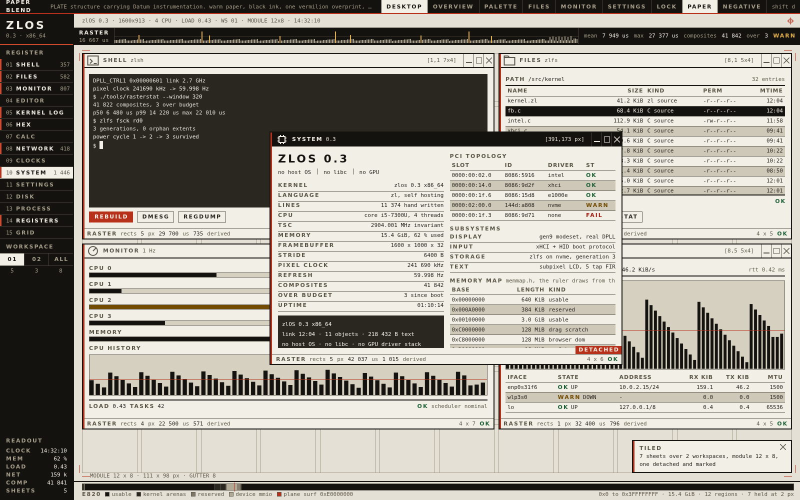
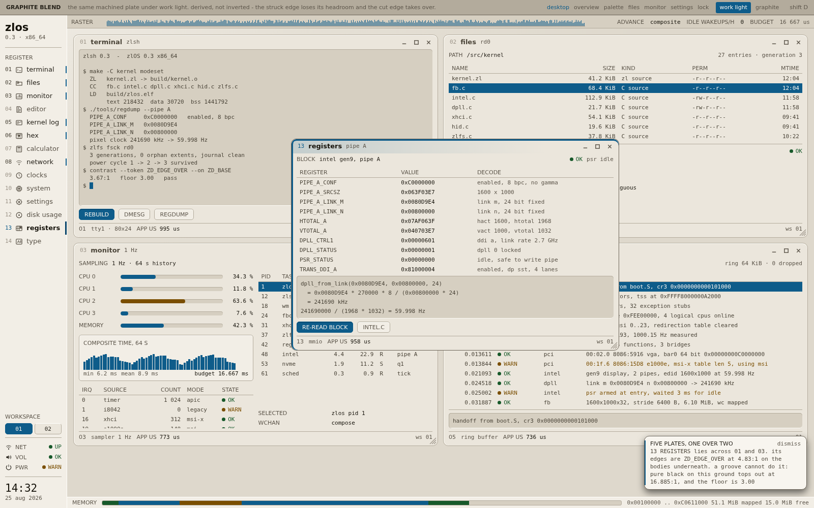
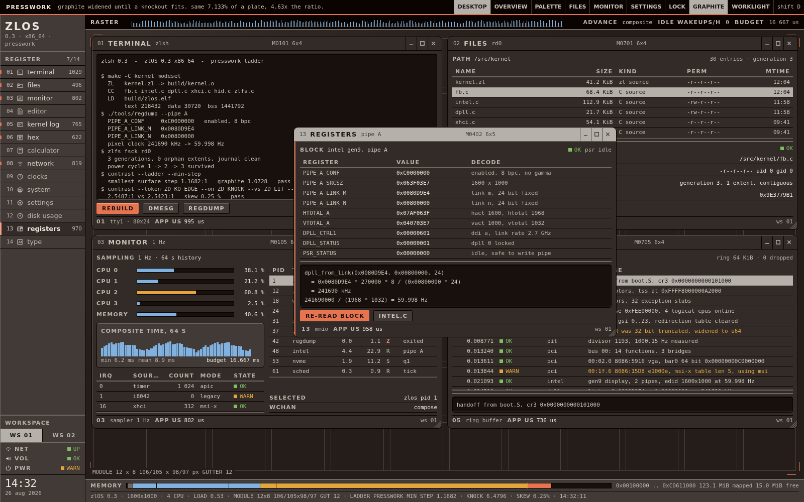
Graphite widened until a knockout fits, then PLATE's knockout taken whole. Same 7.133% of a plate as graphite, 4.63x the ratio inside it: it does not add a mark, it makes graphite's existing mark legible. Focus is a 54 L* excursion at 6.4796:1.
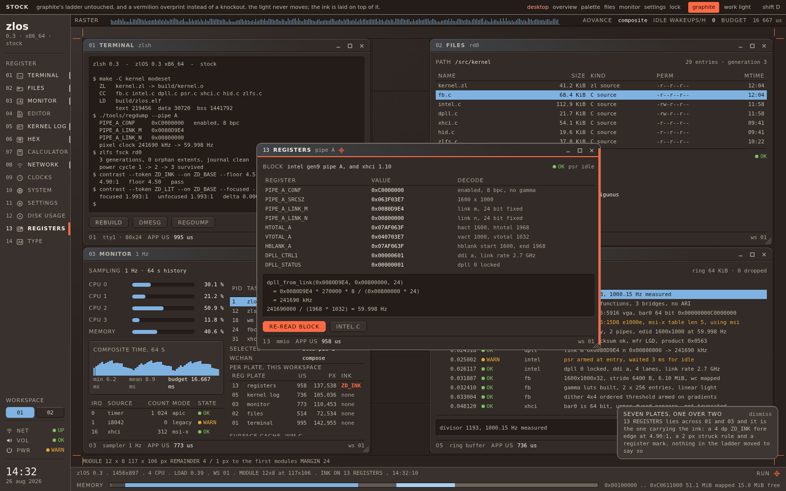